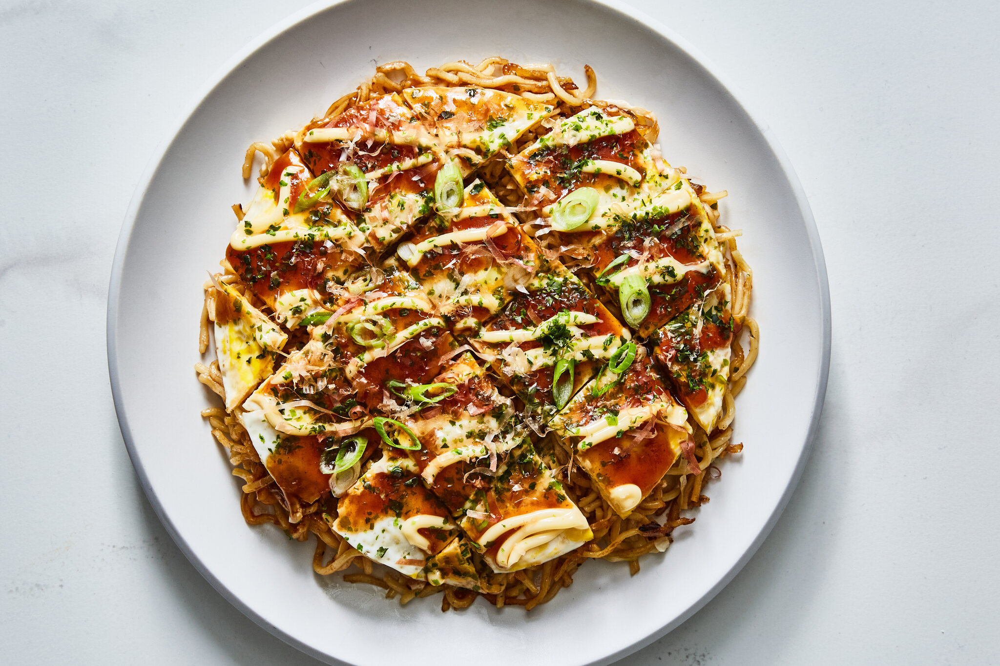

Okonomiyaki
Description
Okonomiyaki is a popular Japanese savory pancake that's as versatile as it is delicious. Its name translates to "grilled as you like it," and true to its name, it's customizable with various ingredients. A batter made from flour, grated yam, eggs, and shredded cabbage forms the base, and additions like pork belly, shrimp, squid, or cheese are often mixed in. Once cooked on a griddle, it's topped with a rich okonomiyaki sauce, Japanese mayonnaise, bonito flakes, and seaweed powder, creating a harmonious blend of flavors and textures.
Ingredients
- 1 cup all-purpose flour
- 1/2 cup dashi stock or water
- 2 eggs
- 1 cup shredded cabbage
- 4 slices of cooked bacon or pork belly (optional)
- 1/4 cup chopped scallions
- 1/4 cup tenkasu (tempura scraps)
- 1/4 cup grated nagaimo (Japanese mountain yam) or substitute grated potato
- Salt and pepper to taste
- Vegetable oil for cooking
- Okonomiyaki sauce (store-bought or homemade)
- Japanese mayonnaise
- Bonito flakes (katsuobushi)
- Aonori (dried seaweed powder)
Instructions
- In a large mixing bowl, combine flour, dashi stock or water, and eggs. Mix until smooth.
- Add shredded cabbage, cooked bacon or pork belly (if using), chopped scallions, tenkasu, grated nagaimo or potato, salt, and pepper. Mix until all ingredients are evenly distributed and coated with the batter.
- Heat a lightly oiled griddle or frying pan over medium heat. Pour the batter onto the griddle, forming a round pancake about 1/2 inch thick.
- Cook the okonomiyaki for 4-5 minutes on each side, or until golden brown and cooked through.
- Transfer the cooked okonomiyaki to a plate and drizzle generously with okonomiyaki sauce and Japanese mayonnaise.
- Sprinkle bonito flakes and aonori over the top.
- Serve hot and enjoy the delightful flavors of this Japanese savory pancake!